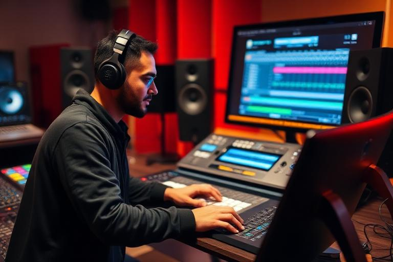

A career behind the console
Producer Career
Not every music career has to happen under the stage lights. Production is a specialist path built around recording knowledge, creative judgement and helping artists turn prepared songs into stronger finished recordings.

In brief
Develop the skills that support production, learn how recording sessions work, and look for opportunities where your expertise is relevant. Labels can employ staff producers, while recording and company systems can create other production contexts. Your value grows from the quality of the work you contribute to, not simply from selecting “producer” as a career identity.
What does a producer do?
A producer supports the creative and technical direction of a recording. In RockMundo's recording model, production sits alongside the underlying song, artist preparation, relevant performer skills, studio quality, engineering and equipment. That makes the producer an important contributor without making them a universal quality multiplier.
Creative direction
Help a project make coherent choices about how the material should become a recording.
Recording judgement
Production knowledge is most useful when paired with an understanding of studios, sessions and performer readiness.
Artist fit
A producer should suit the project rather than being selected only because they are the most expensive or famous option.
Professional history
Completed work gives a producer a career story and helps make future opportunities feel earned.
Build the right abilities
Treat production as a specialisation. Use the current skill tree and education systems as the source of truth for prerequisites and related abilities, because skill structures can evolve as RockMundo is balanced.
- Develop production and recording-relevant skills rather than spreading XP across unrelated abilities.
- Understand the genre and artists you want to work with.
- Learn enough about recording workflow to recognise when the real problem is preparation, performance or studio choice rather than production.
- Keep developing your own musical judgement; technical knowledge alone does not make every artistic choice correct.
Where producer work fits
Production can appear in several parts of the music economy. Record labels have a staff-producer role among their specialist jobs, and recording activity can involve producer choices as part of the session. Other company or professional-service contexts may also expose production work where the live game supports it.
| Route | What it offers |
|---|---|
| Recording sessions | Direct involvement in the process that creates finished recordings. |
| Label employment | A more structured in-house role working around signed artists and releases. |
| Specialist career activity | A way to build a creative profession alongside or instead of front-line performing. |
| Your own projects | Useful practical experience, but producing yourself still requires good songs and performances. |
Approach a session like a professional
- Check the material. Production cannot rescue a song that the artist has barely developed.
- Check the performers. Roles, skills, familiarity and condition still matter.
- Understand the studio. Know what the facility and engineering setup can realistically support.
- Make choices that fit the artist. The right production direction depends on the project.
- Review the result. Use recording feedback to understand which part of the project needs work next time.
Building a producer career
Think in terms of a body of work. Strong sessions, useful collaborations and relevant employment create a more convincing career than repeatedly attaching your name to projects that were not ready. As your character develops, production can become a meaningful identity alongside songwriting, teaching, session performance or business work.
What affects producer contribution?
Relevant ability, project fit, the quality of the surrounding recording setup and the state of the song and performers all matter broadly. Exact internal weights and breakpoints remain hidden so choosing a producer stays a judgement call instead of a solved lookup table.